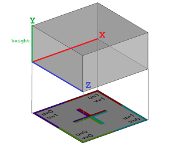
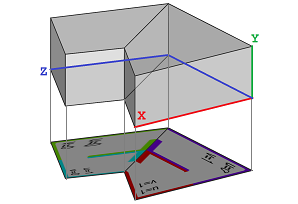
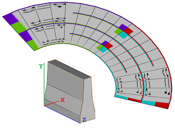
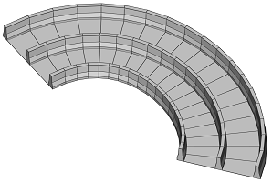
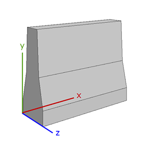
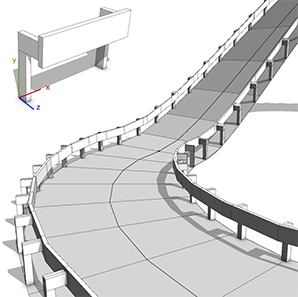
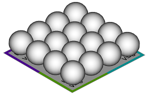
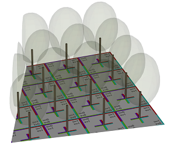
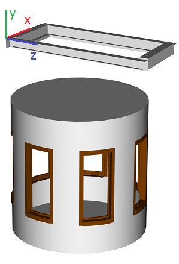
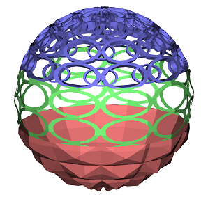

insertAlongUV operation
Synopsis
insertAlongUV(uvSet, geometryPath, height)
insertAlongUV(uvSet, geometryPath, height, heightDirection, heightAlignment)
Parameters
- uvSet (float)
Number of texture coordinates set (integer number in [0,9]). The numbering corresponds to the texture layers of the material attribute, see also Texturing: Essential Knowledge. - geometryPath (string)
File path of the geometry asset to insert. See Asset Search for information about search locations.
The remarks about supported asset formats for the i operation also apply here. - height (float)
The height of the inserted geometry in the world coordinate system. - heightDirection (keyword)
- scope.y: Default. The height is projected along the scope's y axis. Use for example alignScopeToAxes or alignScopeToGeometry to adjust the y axis.
- vertex.normal: The height is projected along (interpolated) vertex normals of the current shape.
Duplicate vertices must be merged in order to compute vertex normals using adjacent face normals.
- heightAlignment (keyword)
- alignPosition: Default. The asset is placed onto the current shape's faces.
- keepPosition: The asset's position along the height dimension is placed relative to its origin.
|
Reads a geometry asset (3D model, polygon mesh) from a file and inserts it along the current shape's uv coordinates by mapping the width and depth of the asset to the chosen uv-set. Specifically,
|
 |
|
The asset is cut and bent to a new geometry that fits into the uv space of the initial shape. On a shape with a uv-set assigned, use split and texturing operations such as normalizeUV, rotateUV, and scaleUV to setup the uvs according to your needs. |
 |
The asset is only mapped onto triangles and quads of the current shape.
Notes
- The new geometry does not inherit the vertex normals of the asset. You can (re-)compute vertex normals using setNormals or softenNormals.
- The asset is cut in order to fit it onto the uv space. This creates coplanar edges and collinear vertices which can be removed using cleanupGeometry.
- Unlike the insert operation, the creation of a new geometry breaks instancing. Furthermore, trimming is not applied automatically.
Related
- setupProjection operation
- projectUV operation
- translateUV operation
- scaleUV operation
- normalizeUV operation
- tileUV operation
- rotateUV operation
- insert operation
- resetGeometry operation
Examples
Streets
|   |
const width = assetInfo("barrier.obj", sx)
const height = assetInfo("barrier.obj", sy)
Street --> split(v, unitSpace, 0) {
width : InsertBarrier |
~1 : Street. |
width : InsertBarrier |
~1 : Street. |
width : InsertBarrier }
InsertBarrier -->
rotateUV(0, 90)
normalizeUV(0, u, collectiveAllFaces)
insertAlongUV(0, "barrier.obj", height)
A road barrier asset is inserted along the uv coordinates of street shapes.
|
|  |
If the asset is oriented with x corresponding to the u direction, rotateUV() is not necessary, and the following changes produce the same result as above.
const width = assetInfo("barrier.obj", sz)
InsertBarrier -->
normalizeUV(0, u, collectiveAllFaces)
insertAlongUV(0, "barrier.obj", height)
|
|  |
const width = assetInfo("guardrail.obj", sx)
const height = assetInfo("guardrail.obj", sy)
const depth = assetInfo("guardrail.obj", sz)
Street -->
alignScopeToAxes(y)
split(v, unitSpace, 0) { depth : rotateUV(0, 180)
InsertGuardrail
| ~1 : NIL
| depth : InsertGuardrail }
InsertGuardrail -->
normalizeUV(0, v, collectiveAllFaces)
tileUV(0, ~width, 0)
insertAlongUV(0, "guardrail.obj", height)
Using alignScopeToAxes(y) ensures that the guard rail asset remains vertical as it is inserted along the uv coordinates of uphill street shapes. tileUV causes the asset to repeat.
|
Repeating geometries
|  |
Example1 --> split(u, uvSpace, 0) { '0.25 :
split(v, uvSpace, 0) { '0.25 :
s('1, 2.5, '1)
i("sphere.obj")
Sphere.
}* }*
Example2 --> scaleUV(0, 4.0, 4.0)
insertAlongUV(0, "sphere.obj", 2.5)
setNormals(auto)
A planar shape is split along its uv coordinates, and a sphere asset is inserted at each split node. A similar result can be achieved by transforming the uv coordinates and inserting the sphere asset along the uv coordinates. In contrast to the first example, only one leaf shape is created.
|
|  |
Lot -->
setupProjection(0, scope.zx, '0.25, '0.25)
projectUV(0)
[ texture("builtin:uvtest.png") Texture. ]
insertAlongUV(0, "Orange_Tree_Analytical_0.obj", 25)
comp(g) { 0 : set(material.opacity, 0.1)
Foliage. |
1 : Trunk. }
A tree model is inserted per uv-range, and its trunk is extracted using a component split.
|
Curved surfaces
|  |
const asset = "windowAligned.obj"
const sy = assetInfo(asset, sy)
const sx = assetInfo(asset, sx)
const sz = assetInfo(asset, sz)
Lot -->
primitiveCylinder(32, 2, 4)
comp(f) { side = Side | all = Endcaps. }
Side -->
split(u, unitSpace, 0) { sx : Split | ~1.5 : Wall. }*
Split -->
split(y) { ~1: Wall. | sz: Window | ~1: Wall. }
Window -->
normalizeUV(0, uv, collectiveAllFaces)
insertAlongUV(0, asset, sy, vertex.normal, keepPosition)
color("#804000")
The insertAlongUV operation can also be used to create curved windows. By using the vertex.normal option, the window asset curves around the cylinder. The keepPosition option places the asset relative to its origin.
|
|  |
Sphere -->
primitiveSphere()
scaleUV(0, 10, 10)
split(y) { ~1 : insertAlongUV(0, "pyramid.obj", 0.5,
vertex.normal, alignPosition)
color(1,0.5,0.5)
Pyramids.
| ~1 : insertAlongUV(0, "circles2D.obj", 0,
vertex.normal, alignPosition)
color(0.5,1,0.5)
Circles2D.
| ~1 : insertAlongUV(0, "circles3D.obj", -0.5,
vertex.normal, alignPosition)
color(0.5,0.5,1)
Circles3D. }
In this example, both 2D and 3D assets are repeatedly inserted on a curved surface. Note that the height parameter is set to positive, zero, and negative values.
|
Copyright ©2008-2019 Esri R&D Center Zurich. All rights reserved.